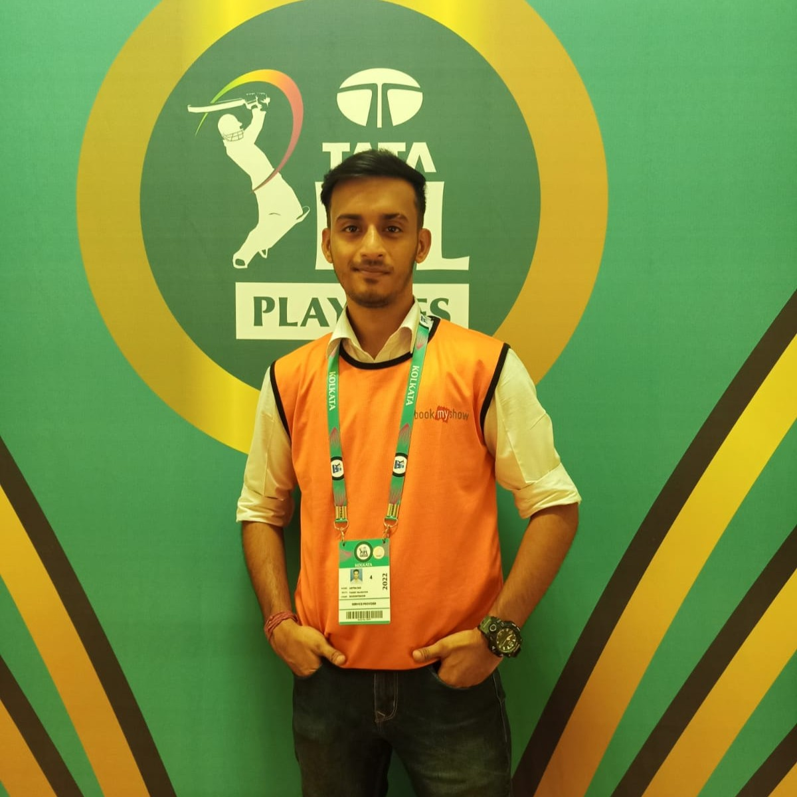
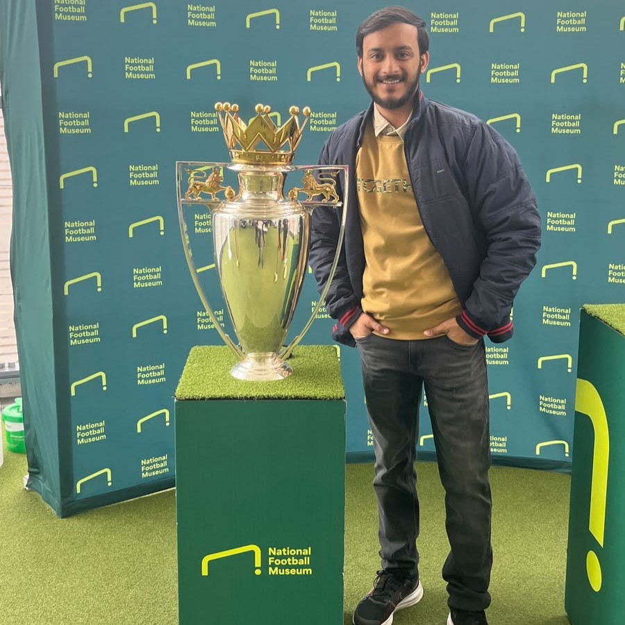
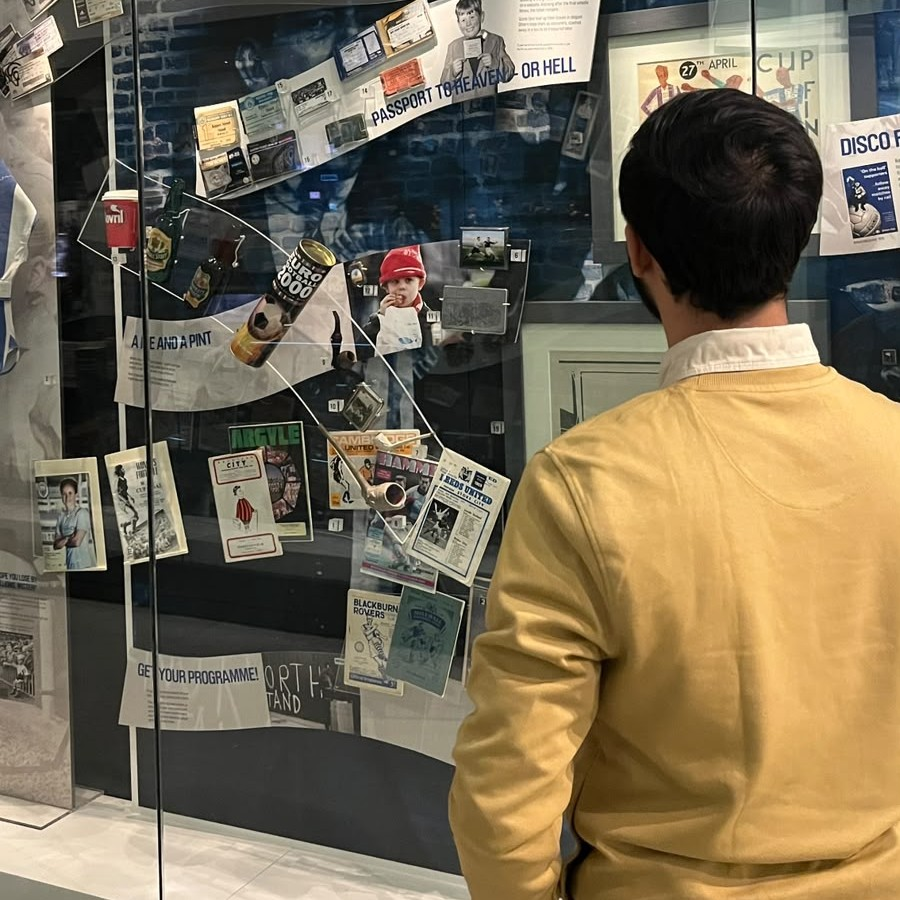

Aritra Das
I'm sports managaement professional
About Me
I am Aritra Das, an aspiring sports management professional with experience in sports event management, retail leadership, and customer service. My goal is to build a successful career in the global sports industry by contributing to professional sports organisations, managing teams, and eventually becoming a sports agent. Through my academic studies and practical experiences, I have developed strong leadership, communication, organisational, and problem-solving skills that enable me to work effectively in dynamic environments.
Sports Management Student & Future Sports Industry Leader
Passionate about sports leadership, event management, team development, and athlete representation within the global sports industry.
- Name: Aritra Das
- Field: Sports Management
- University: De Montfort University
- Current Location: United Kingdom
- Degree: MSc Sports Management (In Progress)
- Bachelor's Degree: BBA Sports Management
- CGPA: 8.32
- Career Goal: Sports Agent & Team Manager
My professional journey includes experience in sports event management through projects associated with IPL and ISL events via BookMyShow, one year of retail leadership experience as a Store Manager at Cell Point, and customer-focused employment with Royal Mail. These experiences have strengthened my leadership abilities, teamwork, communication skills, and adaptability. I believe effective leaders inspire others through integrity, innovation, and continuous learning. My long-term ambition is to work with leading sports organisations, contribute to team success, and represent athletes at the highest professional level.
Major Sports Events IPL & ISL Experience
Years Experience Management & Customer Service
Academic CGPA BBA Sports Management
Industry Sectors Sports, Retail & Logistics
Skills & Leadership Competencies
Through academic study and professional experience, I have developed a range of transferable skills that prepare me for leadership roles within the sports industry. These competencies have been strengthened through sports event management, retail leadership, customer service, and postgraduate study in Sports Management.
My leadership and team management abilities have been developed through managing staff at Cell Point and collaborating with teams during IPL and ISL events. These experiences align with Transformational Leadership Theory, which suggests that effective leaders motivate and inspire individuals to exceed expectations while supporting personal development (Bass, 1985).
Strong communication has been essential throughout my customer-facing and event management roles. Effective communication contributes to stronger relationships, conflict resolution, and team performance. These qualities are closely linked to Emotional Intelligence Theory, which highlights self-awareness, empathy, and interpersonal skills as essential leadership competencies (Goleman, 1995).
My involvement in IPL and ISL events strengthened my ability to coordinate operations, manage stakeholders, and ensure smooth event delivery. Event Management Theory emphasises the importance of planning, coordination, risk management, and stakeholder engagement in achieving successful event outcomes (Getz & Page, 2016).
Working in fast-paced environments has required me to make effective decisions and resolve challenges efficiently. Situational Leadership Theory suggests that leaders must adapt their behaviour according to circumstances and team needs, making flexibility and problem-solving critical leadership attributes (Hersey & Blanchard, 1969).
Experience in retail management and customer service has strengthened my ability to understand stakeholder expectations and build positive relationships. Relationship Marketing Theory highlights trust, commitment, and long-term engagement as essential elements in developing successful stakeholder relationships (Morgan & Hunt, 1994).
Strategic planning skills have been developed through academic projects and professional responsibilities. Strategic Leadership Theory emphasises the importance of vision, long-term planning, resource allocation, and organisational direction in achieving sustainable success (Boal & Hooijberg, 2001).
Education & Experience
My academic background in Sports Management, combined with practical experience in sports events, retail leadership, and customer service, has helped me develop the skills, values, and leadership capabilities required for a successful career in the sports industry.
Professional Profile
Aritra Das
Aspiring Sports Management professional currently pursuing an MSc in Sports Management. Passionate about sports leadership, athlete representation, event management, and team development. Experienced in sports event operations, retail management, and customer engagement.
- Leicester, United Kingdom
- Sports Management Professional
- Future Sports Agent & Team Manager
Education
MSc Sports Management
2025 - Present
De Montfort University, United Kingdom
Developing advanced knowledge in sports leadership, sports marketing, governance, event management, and strategic decision-making within professional sports organisations.
Bachelor of Business Administration (Sports Management)
Completed
India
Graduated with a CGPA of 8.32. Built strong foundations in sports administration, management principles, event planning, marketing, and organisational leadership.
Professional Experience
Sports Event Management Associate
Sports Events Experience
BookMyShow – IPL & ISL Events
- Supported event operations for major sporting competitions including IPL and ISL.
- Assisted with crowd management, customer service, and event coordination.
- Worked within large teams to ensure successful event execution.
- Developed communication, teamwork, and organisational skills in high-pressure environments.
Store Manager
1 Year
Cell Point
- Managed daily store operations and customer service activities.
- Led and motivated staff to achieve sales and service targets.
- Handled inventory control, problem resolution, and team coordination.
- Strengthened leadership, decision-making, and people management skills.
Postal Operations Assistant
Part-Time
Royal Mail, United Kingdom
- Worked in a fast-paced operational environment.
- Maintained efficiency, accuracy, and teamwork standards.
- Developed adaptability, reliability, and time-management skills.
Curriculum Vitae
A summary of my education, experience, skills, and professional achievements.
Leadership Journey & Achievements
My leadership development has been shaped through academic learning, professional experience, and involvement in sports-related environments. Each experience has contributed to my growth as an aspiring sports management professional.

IPL Event Operations
Supporting large-scale sporting events and fan experiences.

Natioanl Football stadium
Teamwork and event coordination within professional football events.

Store Management Leadership
Leading teams, solving problems, and managing daily operations.

Education & Exploration
Developing professionalism, reliability, and teamwork.

BBA Sports Management
Academic foundation in sports administration and leadership.

MSc Sports Management
Developing strategic leadership skills for the global sports industry.
Professional References
Leadership Philosophy & Professional Values
My leadership approach is built on integrity, teamwork, accountability, continuous learning, and effective communication. Through academic study and practical experience, I have developed a leadership mindset that supports collaboration, innovation, and positive team performance within the sports industry.
Teamwork
I believe successful leaders create environments where individuals collaborate effectively to achieve shared goals.
Communication
Clear communication helps build trust, improve performance, and ensure that teams remain aligned with organisational objectives.
Innovation
Effective leaders embrace new ideas and continuously seek opportunities to improve processes and outcomes.
Integrity
Ethical decision-making and honesty form the foundation of trustworthy and sustainable leadership.
Continuous Development
I am committed to lifelong learning and professional growth to remain effective within the evolving sports industry.
Leadership Ambition
My long-term goal is to contribute to professional sports organisations as a leader, manager, and athlete representative.
Contact
Thank you for visiting my professional portfolio. I welcome opportunities to connect with professionals, organisations, and individuals within the sports industry.
Location
Leicester, United Kingdom & India
Mobile
+447414796007
aritrad2002@gmail.com
Career Interests
Sports Management, Sports Leadership, Athlete Representation, Event Management, Sports Marketing, and Team Operations.
References
The following academic sources have informed the leadership theories and professional concepts discussed throughout this portfolio.